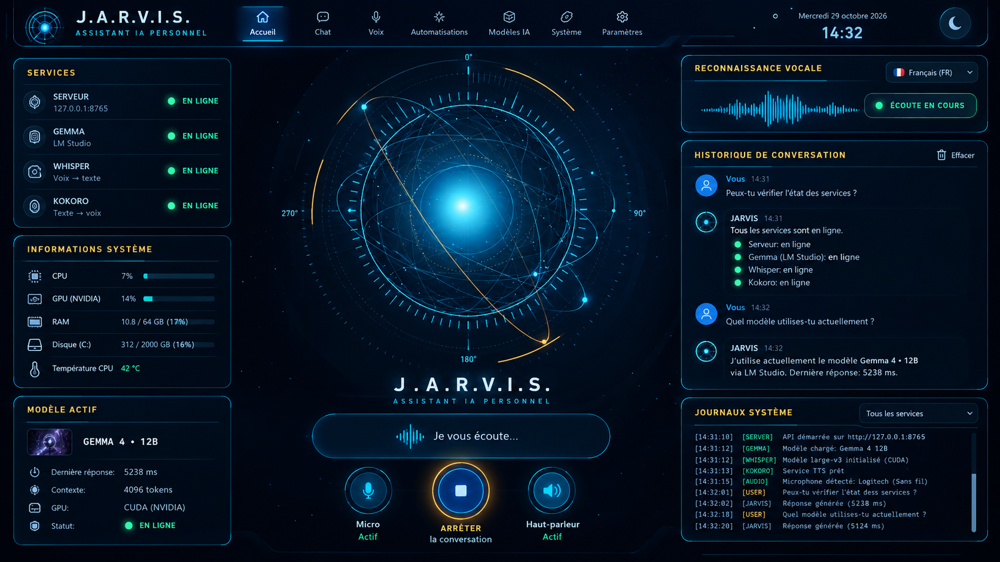
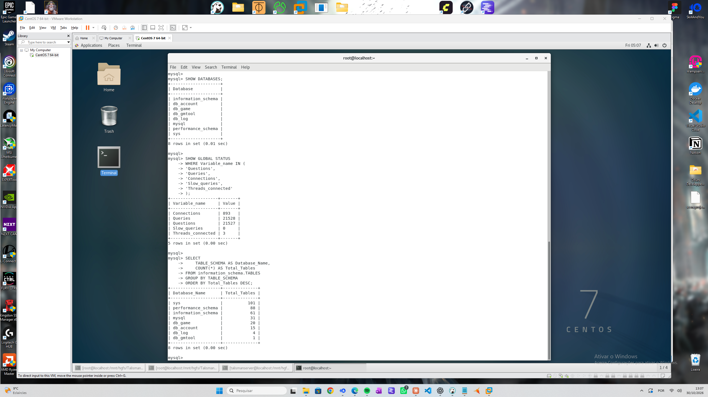
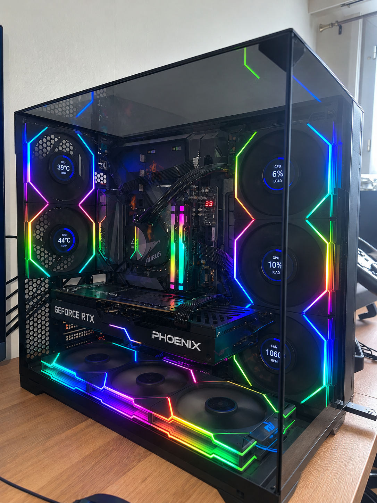
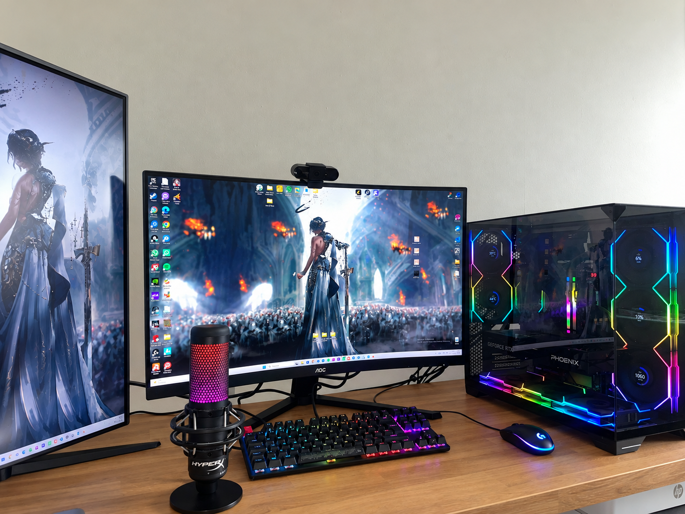

Portfolio · Clarens, Vaud
Anne
Gabrielly Alves
Profil junior en informatique · IT Support · Systèmes · Développement Web
Profil polyvalent dans le domaine informatique, avec des compétences en hardware, configuration de systèmes, support technique et développement Web. J'aime comprendre, configurer, construire et résoudre des problèmes informatiques.
Ouverte aux opportunités en support technique, Help Desk, systèmes, hardware et développement Web.
À propos
Un profil
polyvalent
Après une expérience dans le service, je me suis réorientée vers l'informatique. J'apprécie autant le contact et la résolution de problèmes que la compréhension des systèmes et des outils qui les font fonctionner.
Je suis actuellement une formation Développeur Web et Web Mobile / Full Stack à Skill&You Suisse. En parallèle, je développe et maintiens des projets personnels autour de l'IA locale, d'un environnement Linux, du montage de PC et du Web.
Ouverte aux opportunités dans différents domaines de l'informatique, notamment le support technique, le Help Desk, les systèmes, le hardware et le développement Web.
Formation
Skill&You Suisse
Développeur Web et Web Mobile / Full Stack
Formation suivie à mon propre rythme, avec une progression soutenue et un investissement personnel régulier dans l'apprentissage et la mise en pratique du développement Web et Web Mobile.
Conception Web
Développement Web et Web Mobile
Approche Front-end et Back-end au sein du programme, complétée par des réalisations personnelles.
Compétences
Des compétences
mises en œuvre
Les compétences ci-dessous reflètent ma formation actuelle et les technologies utilisées dans mes projets personnels.
Développement Web
Formation en cours
Programmation & automatisation
Mises en œuvre dans le projet J.A.R.V.I.S.
Systèmes & infrastructures
Environnement serveur personnel
IA & outils techniques
Mises en œuvre dans le projet J.A.R.V.I.S.
Hardware & configuration
Compétences techniques maîtrisées
Projets
Réalisations
personnelles
Des projets concrets qui illustrent mon travail personnel. Ils ne représentent pas des prestations réalisées pour des clients.

Projet personnel réalisé
J.A.R.V.I.S. : assistant personnel IA
Assistant personnel développé et configuré pour comprendre des commandes, interagir avec différents outils et faciliter certaines tâches informatiques.
Objectif : associer reconnaissance vocale, modèles de langage locaux, automatisation et intégration d'outils IA au sein d'un même environnement.
Réalisations
- Configuration d'un environnement d'IA local et de modèles de langage.
- Mise en place de la reconnaissance vocale avec Whisper.
- Automatisation de tâches et intégration de plusieurs outils.
- Diagnostic et résolution de problèmes techniques.

Projet personnel réalisé
Infrastructure Linux & bases de données
Configuration et gestion d'un environnement serveur personnel sous Linux, dans des environnements virtualisés. Il ne s'agit pas d'une infrastructure d'entreprise.
Objectif : développer la pratique des services, des bases de données, de la virtualisation et de l'accès à distance.
Réalisations
- Installation et configuration d'un environnement Linux.
- Mise en place d'un serveur personnel et gestion de services.
- Installation et gestion de MariaDB/MySQL ainsi qu'organisation de bases de données.
- Configuration d'environnements virtualisés et accès à distance.
Formation en cours
Développement Web
Le portfolio constitue une réalisation Web concrète : sa structure, son interface responsive et ses interactions ont été travaillées dans le cadre de ma formation et de ma pratique personnelle.
Objectif : développer des interfaces soignées, structurées et accessibles, adaptées aux écrans mobiles, tablettes et ordinateurs.
Réalisations
- Structure sémantique des pages et organisation du code.
- Adaptation de l'interface à différentes tailles d'écran.
- Amélioration de l'accessibilité, de la lisibilité et des interactions.
Ce portfolio est issu d'une maquette HTML de départ, puis adapté et amélioré avec l'aide d'un assistant IA.


Compétences techniques maîtrisées
Hardware & configuration PC
Réalisations personnelles autour du montage, de la configuration et du diagnostic informatique. Les images illustrent mon propre environnement, non des installations réalisées pour des clients.
Objectif : assurer la compatibilité des composants, configurer un poste de travail fiable et identifier l'origine d'un problème matériel ou logiciel.
Réalisations
- Assemblage et installation de composants.
- Configuration du BIOS, de Windows et des pilotes.
- Vérification de la compatibilité matérielle.
- Diagnostic de problèmes de configuration et de fonctionnement.
Parcours
Du service
à l'informatique
L'expérience en service a développé des compétences humaines directement utiles dans un rôle de support et d'assistance technique.
- Jusqu'en août
Serveuse · Salon de la Gare
Accueil et communication avec la clientèle, travail en équipe, organisation et gestion des priorités dans un environnement dynamique.
- Depuis le 18 février 2026
Formation Développeur Web et Web Mobile / Full Stack
Skill&You Suisse. Développement de compétences Web complété par des projets personnels en IA, systèmes Linux et hardware.
Compétences transférables
- CommunicationExpliquer clairement et adapter mon discours à mon interlocuteur.
- ÉcouteComprendre le besoin avant de proposer une solution.
- OrganisationGérer les priorités, même dans un environnement dynamique.
- RéactivitéGarder son calme et s'adapter aux imprévus.
- Travail en équipeFiabilité, sens du service et résolution de problèmes.
Contact
Échangeons
ensemble
- NomAnne Gabrielly Alves
- E-mailannegabrielly@gmail.com
- Téléphone+41 76 843 56 50
- LieuClarens, Vaud, Suisse
- GitHubgithub.com/AnneGaaby
- LinkedInlinkedin.com/in/anne-gabrielly-5837a1314